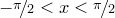

A large number of standard functions are pre-defined within PyXPlot’s mathematical environment, ranging from trigonometric functions to very specialised functions such as the phase of the Moon on any given day or the size of the Universe in the  cosmological model. A complete list of these can be obtained by typing show functions or by consulting Chapter 2. In addition, the user can define his own functions to equal any algebraic expressions using a similar syntax to that used to declare new variables, as in the examples:
f() = pi g(x) = x*sin(x) h(x,y) = x*y
A list of all of the user-defined functions which have been set can be found at the end of the output of the show functions command, or can be obtained without the list of system-defined functions by typing show userfunctions. Unlike in the case of pre-defined variables, system-defined functions may not be over-written; trying to define a function with the name sin(x), for example, will result in an error. Once defined, user-defined functions can be undefined by typing, for example:
f() =
Where the logic required to define a particular function is greater than can be contained in a single algebraic expression, a subroutine should be used (see Section 6.9); these allow an arbitrary numbers of lines of PyXPlot code to be executed whenever a function is evaluated.